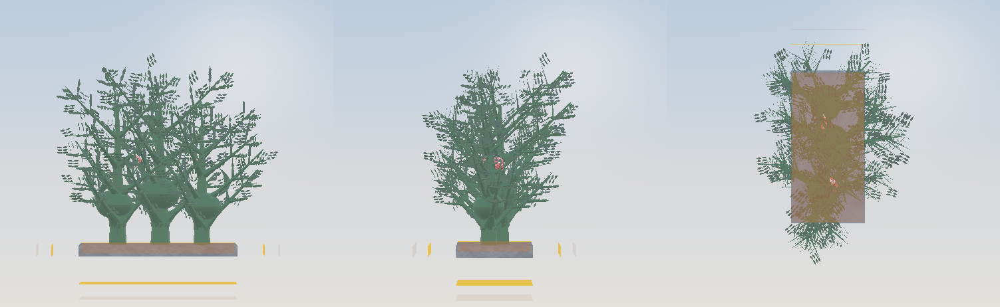
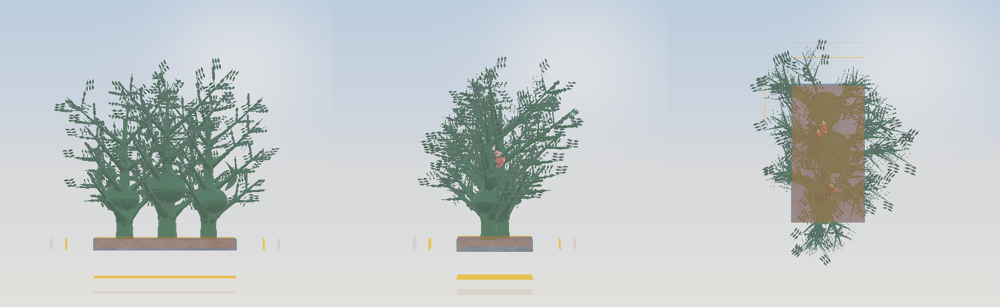
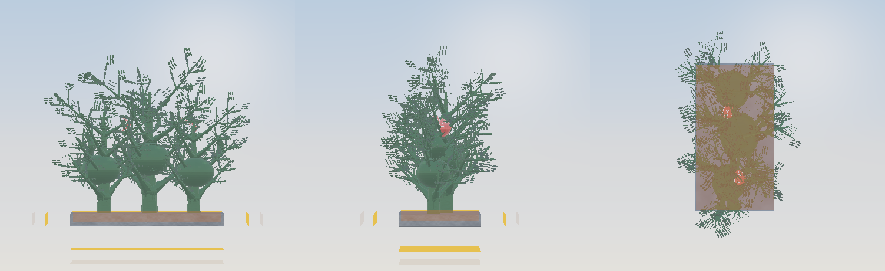
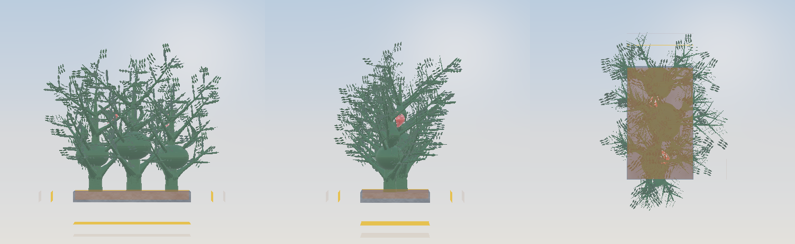

Bamboo Screen Cluster

A distinct bamboo screen cluster building-landscape object with explicit support, irrigation or attachment semantics and object-local botanical geometry.
Evidence 80/100 · Visual match unmeasured8 distinct grammar versions
A distinct bamboo screen cluster building-landscape object with explicit support, irrigation or attachment semantics and object-local botanical geometry.
Evidence 80/100 · Visual match unmeasured
A distinct clipped box hedge building-landscape object with explicit support, irrigation or attachment semantics and object-local botanical geometry.
Evidence 80/100 · Visual match unmeasured
A distinct fern understorey cluster building-landscape object with explicit support, irrigation or attachment semantics and object-local botanical geometry.
Evidence 80/100 · Visual match unmeasured
A distinct flowering hydrangea shrub building-landscape object with explicit support, irrigation or attachment semantics and object-local botanical geometry.
Evidence 80/100 · Visual match unmeasured
A distinct native privacy shrub building-landscape object with explicit support, irrigation or attachment semantics and object-local botanical geometry.
Evidence 80/100 · Visual match unmeasured
A distinct sculptural agave cluster building-landscape object with explicit support, irrigation or attachment semantics and object-local botanical geometry.
Evidence 80/100 · Visual match unmeasured
A distinct succulent rockery cluster building-landscape object with explicit support, irrigation or attachment semantics and object-local botanical geometry.
Evidence 80/100 · Visual match unmeasured
A distinct topiary sphere shrub building-landscape object with explicit support, irrigation or attachment semantics and object-local botanical geometry.
Evidence 80/100 · Visual match unmeasured